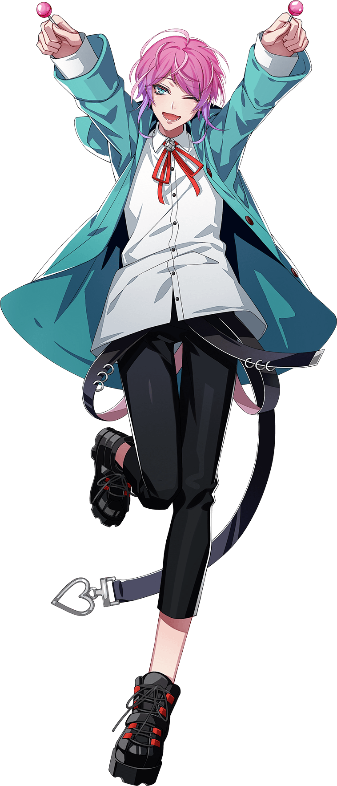
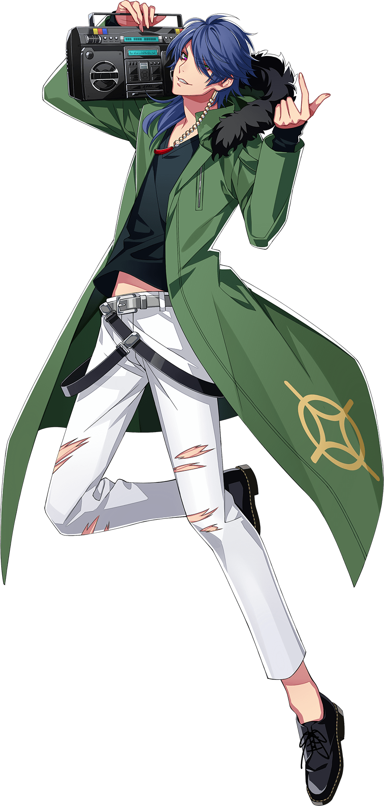

Fling Posse is the Shibuya Division representative rap group. The team consists of the
gambler Dice Arisugawa, a novelist Gentaro Yumeno, a nd their leader, fashion designer Ramuda Amemura.
Their many fans adore them due to the distinct characteristics of their performances, overflowing with a
pop-style
charm and provoking their opponents.
Ramuda Amemura

Ramuda Amemura, a.k.a. easy R, is a fashion designer, former member of Kujaku Posse and The Dirty Dawg, and
the current leader of Fling Posse.
He is the producer of the fashion brand 'Empty Candy'.
He looks as young as a primary school student, but is quick-witted and calculating, though he often makes
absent-minded remarks with a frequent lack of tact in his words. He's very popular with women due to his
cuteness. He is connected to Chuohku and
holds a great secret that can't be told to anyone.
A peculiar figure. He has a cat and dog relationship with Jakurai, leader of
the Shinjuku
Division.
“ The optimist sees the doughnut, the pessimist sees the hole. ”
Solos
Gentaro Yumeno
Gentaro Yumeno, a.k.a. Phantom, is a novelist and the second member of Fling Posse.
A writer who dresses like an intellectual from a bygone era. He enjoys making up stories about the lives of
the strangers he passes on the street.
He is an extremely persuasive liar and often times those lies would go unnoticed were it not for his habit
of teasing the gullible by telling them,
“That was just a lie”.
“ What do you want meaning for? Life is desire, not meaning. ”
Solos
Dice Arisugawa

Dice Arisugawa, a.k.a. Dead or Alive, is a gambler and the third member of Fling Posse.
A gambler so addicted to the game he’ll lay not only whatever cash he can get his hands on, but even his
life, down on the table for the right bet.
There’s nothing he despises more than the phrase, “the straight and narrow”, and he’s only survived as long
as he has thanks to the extraordinarily
good luck he was born with. He makes all of his decisions with the dice he carries around.
As often as he finds himself flat broke, he’s quick to latch onto anyone who will feed him.
“ Love the life you live. Live the life you love. ”
Solos